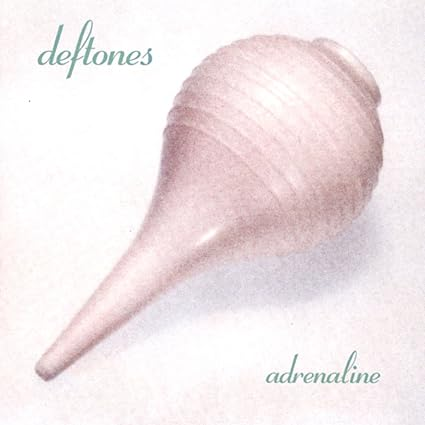
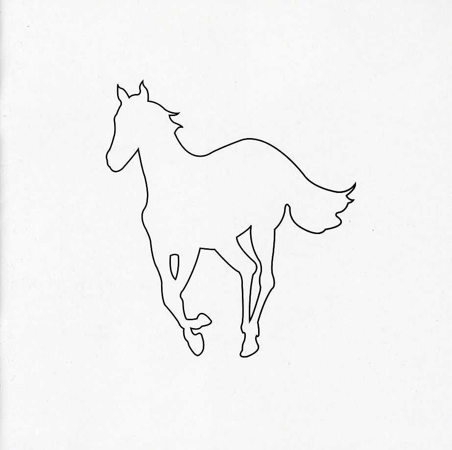
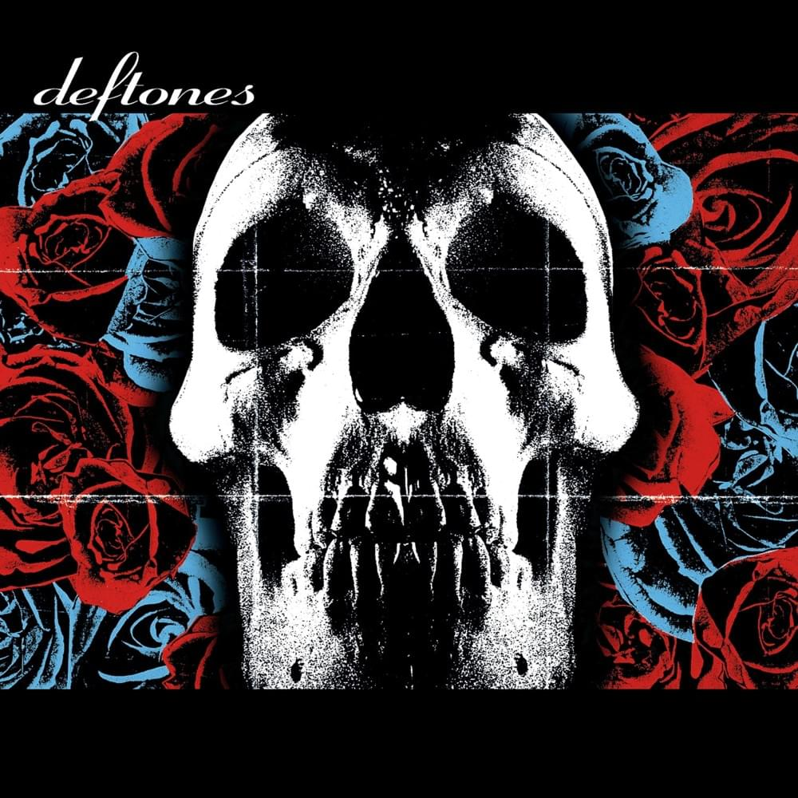
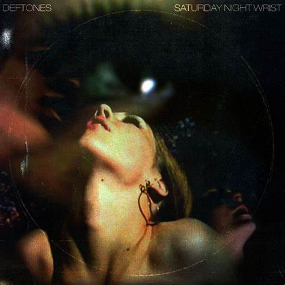
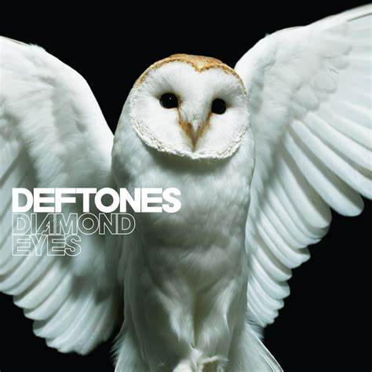
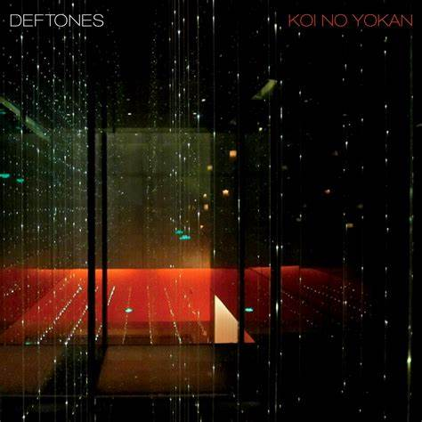
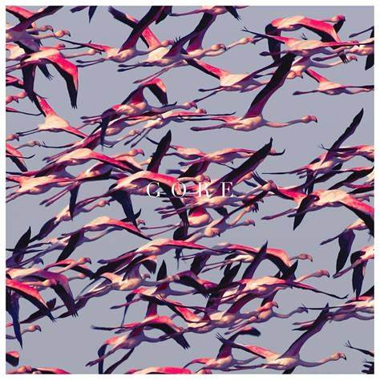
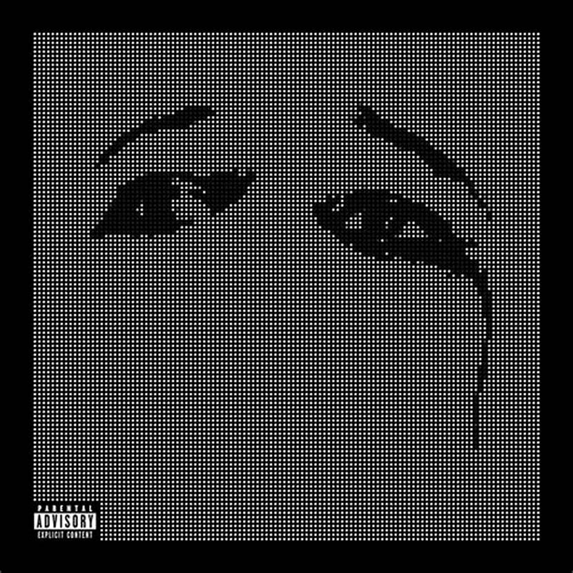

DEFTONES
É uma banda formada em Sacramento, California em 1988, em que seu grupo original era composto por: Chino Moreno(vocal e futuramente guitarra secundária), Stephen Carpenter(guitarra), Abe Cunningham(bateria) e Dominic Garcia(baixo). Esse alinhamento mudou durante os primeiros anos da banda, e foi estabilizado com a troca de Dominic por Chi Cheng, após um tempo houve a entrada do pianista Frank Delgado.
Deftones é considerado como metal alternativo, além de nu-metal(começo) e rock experimental, tendo sido uma banda muito grande até hoje.
ADRENALINE
Esse foi o album de lançamento da banda, tendo sido lançado em 1995 foi um hit do movimento nu-metal, que teve mais de 220 000 cópias vendidads.
Adrenaline é um album do gênero nu-metal e tem músicas mais agressivas e brutas, com elementos de rap e muitos gritos.
AROUND THE FUR

Foi o segundo album da banda, tal que foi lançado em 1995, foi um grande propulsor para a fama da banda, com hits como "My Own Summer(shove it)" e "Be Quiet And Drive(Far Away)", com o primeiro aparecendo futuramente na soundtrack do filme Matrix.
O albúm foi dedicado para Dana Wells, enteado de Max Cavalera - Sepultura, Soulfly e Cavalera Conspiracy - Cavalera também teve contribuição na música "headup". No geral Around The Fur explora um certo Soft-Hard, no qual são músicas que misturam o pesado com o atmosférico.
WHITE PONY
Foi o terceiro album da banda, lançado no ano 2000 e foi o album mais vendido do Deftones contendo o status de platina, além de ter alcançado o terceiro lugar no U.S billboard - Tabela de músicas mais famosas - e 1.3 milhões de cópias.
Esse album foi feito com muita atenção e tomou um lado mais fantasioso, também foi um album no qual a banda foi mais soft em relação aos outros albuns.
DEFTONES - ALBUM
O auto-intitulado da banda foi lançado em 2003 e alcançou a segunda posição no US billboard, tendo tomado um ano para ser feito e um vusto de por volta de 2.5 milhões de dólares.
Esse albúm continua com aquela vibe Soft-Hard que o Deftones trás e em que a maioria das críticas foram positivas e em favor ao album.
SATURDAY NIGHT WRIST
O quinto album da banda foi levemente pior em vendas se comparado aos dois últimos lançamentos, além de sua produção ter sido tensa, devido ao novo produtor e as vidas pessoais dos integrantes.
Esse foi o último album lançado de qual Chi Cheng participou antes de sua morte. O álbum teve dois singles: "Hole in the Earth" e "Mein", que teve colaboração com Serj Tankian da banda System Of A Down.
DIAMOND EYES
Esse album foi lançado em 2010 e foi o primeiro album que não tinha o Chi Cheng como baixo, nesse album o baixo era Sergio Verga. Teve dois singles: "Rocket Skates" e "Diamond Eyes", os quais foram comparados com o estilo de Around The Fur.
Diamond Eyes foi um album com musicas mais otimistas no sentido e sonoramente, quando comparado com o album não lançado da banda:Eros.
KOI NO YOKAN
O sétimo album da banda foi lançado em 2012, e junto com ele vieram boas críticas, ele também teve algumas músicas dele apresentadas durantes turnês anteriores ao seu lançamento.
Koi No Yokan tem uma vibe de metal alternativo, tendo diversos elementos presentes em albuns anteriores, tais sendo Saturday Night wrist e Diamond Eyes, além de tomar inspiração em gêneros como o shoegaze,doom e groove metal.
GORE
Esse album foi lançado em 2016 e foi bem aclamado pela crítica e alcançou o segundo lugar no US billboard, sendo melhor que o auto-intitulado da banda, o album foi uma tensão criativa entre Chino e Carpenter.
Gore foi um album que de acordo com Chino, não alegre, porém não raivoso. O album teve um estilo meio rock experimental gospel com influências de post-punk e de post-metal, sendo de certa forma um album bem experimental para a banda.
OHMS
O último album lançado até hoje, que foi lançado em 2020 e foi muito bem aclamado pela crítica. Ohms foi o primeiro album que foi produzido por Terry Date desde o album auto-intitulado da banda.
O album foi considerado uma volta para sua essência de metal alternativo, também foi descrevido como shoegaze e post-rock, sendo o último album da qual o baixo Sergio Verga participou antes de sair da banda.